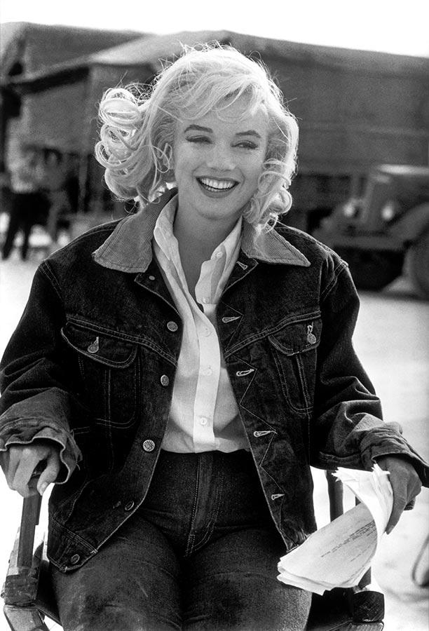

In 1950, Monroe had bit parts in Love Happy, A Ticket to Tomahawk, Right Cross and The Fireball, but also appeared in minor supporting roles in two critically acclaimed films: Joseph Mankiewicz's drama All About Eve and John Huston's crime film The Asphalt Jungle. Despite her screen time being only a few minutes in the latter, she gained a mention in Photoplay and according to biographer Donald Spoto "moved effectively from movie model to serious actress". In December 1950, Hyde was able to negotiate a seven-year contract for Monroe with 20th Century-Fox. He died of a heart attack only days later, which left her devastated.
The Fox contract brought Monroe more publicity, and she had supporting roles in four low-budget films in 1951: in the MGM drama Home Town Story, and in three moderately successful comedies for Fox, As Young as You Feel, Love Nest, and Let's Make It Legal.[80] According to Spoto all four films featured her "essentially [as] a sexy ornament", but she received some praise from critics: Bosley Crowther of The New York Times described her as "superb" in As Young As You Feel and Ezra Goodman of the Los Angeles Daily News called her "one of the brightest up-and-coming [actresses]" for Love Nest. Her popularity with audiences was also growing: she received several thousand fan letters a week, and was declared "Miss Cheesecake of 1951" by the army newspaper Stars and Stripes, reflecting the preferences of soldiers in the Korean War. In her private life, Monroe was in a relationship with director Elia Kazan and also briefly dated several other men, including director Nicholas Ray and actors Yul Brynner and Peter Lawford. 